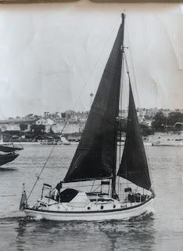
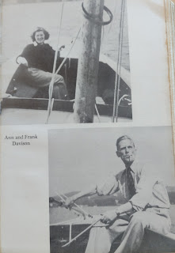
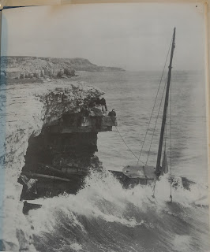

{kind=link}
She’d left Plymouth on May 18 1952 frightened stiff, alone on her 23’ yacht Felicity Ann. ‘I wondered why I had let a dream run away with me. Why, for heaven’s sake, why?’ Ann had told the press that she'd be heading for Madeira but stopped at Douarnenez, Vigo, Gibraltar, Casablanca, Las Palmas, Dominica (and other Caribbean Islands) and Nassau. Then she had followed the Intracoastal Waterway to her final destination.
Ann and her small ship arrived in New York seventy years ago this month (November 1953) She was the first woman to have sailed alone across the Atlantic.
I wanted to mark the occasion. Simon Kiln, Ann’s closest surviving relative agreed. He and his sisters gave their permission for Golden Duck to publish a new edition of My Ship is So Small and also highlight the work of the North Western School of Wooden Boatbuilding who have rescued and restored Felicity Ann. Offering a Kindle publication with the option of print-on-demand paperbacks seemed the most logical way to ensure the book was equally available on both sides of the Atlantic.
I wrote an introduction, Wayne Chimenti from the Community Boat Project, Port Hadlock, WA, wrote an afterword, Bertie undertook the typesetting and uploaded the finished product to KDP. Just as we’ve done for the fifteen titles already on our list. We chatted happily about the other neglected books by women sailors which we might also make available this way. Not as congenial as trade paperbacks of course, but by saving all those print and postage costs we could do so much more, we told ourselves. Then the books would be there, permanently in print and available world wide.
***
A few days later an unexpected notification arrived from Amazon’s KDP’s Content Review Team
During our review, we found that the following book(s) cannot be published as public domain. At this time, we're not confident the content falls in the public domain. My Ship Is So Small by Davison, Ann (AUTHOR) (ID: 56162770) As a result, we've determined that we will not be making the book(s) available for sale on Amazon.
We were invited to reply explaining why we thought the book was in the public domain. We wrote back politely, explaining that we did not think this book was in the public domain. We knew that My Ship is So Small was still in copyright. It had first been published in 1956; the author had died in 1992 – her rights protected for 70 years. However we had permission from the copyright holders to produce a new edition. We referred to our copyright page, we produced emails from Simon Kiln giving us permission. We tried to link KDP to Simon as the copyright holder. We copied him in so they could contact him directly. They said they were unable to recognise another email address.
The refusal to publish was repeated. We were puzzled and wondered whether UK and US copyright laws were so different that we needed to restrict our edition to just one territory. We tried that and various other well meaning permutations. But whatever we did or said, the misunderstandings and refusals kept rolling inexorably back.
My Ship Is So Small Davison, Ann (AUTHOR) After further review, we’ve decided to uphold our previous decision and won’t be making the book(s) available for sale in the following marketplace(s): ALL At this time, we're not confident the content falls in the public domain in the marketplace(s) listed above. If your book(s) isn't in the public domain, reply to this email and provide us with documentation and/or verification showing you hold publishing rights.
Again and again we replied, explaining that the book was copyright, attaching emails which gave us permission to publish a new edition. But the bots were deaf.
Until suddenly they changed their mind.
Based on our review, the content included in the book(s) listed above is in the public domain. As a result, we will not be offering your book(s) for sale on Amazon. In order to publish the book(s), you will need to submit it as a new book in your KDP account with public domain selected under Publishing Rights.
We can’t do this! we said, the book is copyright. It's not in the public domain. We would be ignoring legal rights that belong to Ann's family. Yet again we tried to explain. Yet again we weren't heard.
Thanks for your message regarding the following book(s): My Ship Is So Small Davison, Ann (AUTHOR) 56180888 After further review, we’ve decided to uphold our previous decision and won’t be making the book(s) available for sale on Amazon.
By this time, we were losing track of which of their previous decisions they were upholding. Their refusals were the only consistency. All our questions and explanations were ignored. Sometimes there was a human name at the bottom of the message. We seized on these and wrote increasingly desperate appeals, as if they were human. But there was never the same name twice and never a reply to our replies. This silly game of blind ping pong seemed likely to take longer than an Atlantic crossing until KDP went for the smash:
We have temporarily suspended your KDP account because we found another instance where you submitted public domain content with the incorrect publishing rights selected in the title(s) listed below: 56175384_My Ship Is So Small
To have your account reinstated, please take the following steps:
1. Reply to this message with the following declaration: 'I confirm that I have read and will comply with the Content Guidelines (https://kdp.amazon.com/help/topic/G200672390) and the public domain guidelines (https://kdp.amazon.com/help/topic/G200743940), and I will unpublish any previously published books with the incorrect publishing rights.'
2. After reinstatement, review your catalog and unpublish any titles that do not comply with the Content Guideline.
Until we receive a response from you, your account will remain suspended.
Our account being suspended meant that all our previous 15 books, gone. I swallowed my principles consulted Simon and Bertie, made sure that the copyright page was still unchanged and copy-pasted the required declaration. I felt like Archbishop Cranmer recanting my faith.
And just like poor old Cranmer it did me no good at all. The next time we tried to upload the title My Ship is So Small that they had told us was in the public domain, as a public domain title (though we knew it was not) using the public domain option (which they had told us to use) the Wrath of God came down on my apostate head.
We are terminating your account effective immediately because you continued to publish public domain content with the incorrect publishing rights selected. You can see the violations reflected in the following book(s): 56185516 My Ship Is So Small
As part of the termination process:
• We will close your account
• You are no longer eligible to receive any outstanding royalties
• You will no longer have access to your accounts. This includes, editing your titles, viewing your reports and accessing any other information within your account
• All of your published titles will be removed from sale on Amazon
Additionally, as per our Terms and Conditions, you aren't allowed to open any new KDP accounts
I asked for the appeals process. There was none.
After reviewing your response, we have reevaluated the Content Guideline violations relating to the titles in your account. We found you have uploaded public domain content with the incorrect publishing rights selected. As a result, we are upholding our previous decision to terminate your KDP account and remove all your titles from Amazon.
I had driven to Hampshire that weekend to give a talk. I was early. I sat in an empty carpark looking at a future where I had lost my electronic rights to all my own titles. If there had been a pyre handy, I’d have sizzled the fingertips that had copy-pasted that first recantation.
Then I remembered I had a doughty husband who might be able to find the telephone number for the Amazon media centre….
The rest of this tedious episode ended happily – except that I still feel shame at using Francis as my Get-Out-Of-Jail-Free card and I’m also too terrified to venture any further into the bot-ridden territory of print on demand. (What a joy it was to ring my friends at Biddles of Kings Lynn and place an order for 100 non-virtual paper backs!)
I have to admit that I even feel nervous that writing disparagingly about Amazon KDP here will reawaken the executioners. My publisher at A Big Company tells me that it’s the standard tactic. Argue and they suspend your account. A drop in the ocean of profit for them; an irreparable hole below the waterline for you.
So many people at the moment seem to have similar tales of some completely random error or arbitrary decision by a large corporation, which ought to be sorted out in a five minute conversation by human beings speaking the same language, but which spiral bewilderingly into repetitive timewasting arguments and endless hours of waiting on the phone. Until suddenly they close your account or cut off your electricity because the non-human system (not person) you’ve been speaking to simply isn’t set up to make the simple adjustment or correction needed. As the manager of my local post office said to me today – “I couldn’t even find any one to shout at!”
And we all know what happens to sub-postmasters who run up against a mistake in the system…
***
So how does this connect to Ann Davison’s book about her small, sweet ship and their long Atlantic crossing?
 |
| Felicity Ann |
{kind=link}
In May 1949 a series of misfortunes, misunderstandings, possibly misjudgements, meant that Ann and her husband Frank stood to lose the only thing they had, their 60’ ketch Reliance, which was their home and their project and had consumed everything they had in the world - energy, money and dreams. The bank had foreclosed; a summons had been issued against them; a writ would be nailed to the mast.
Frank could cope no longer. ‘Let’s clear out’ he’d said. And Ann had agreed. Reliance was not ready for sea but it seemed their only hope. Take her somewhere out of England where she could be sold and their debts repaid. Then they could start afresh. Cuba seemed like a good idea.
 |
| Ann and Frank Inland Sailing |
{kind=link}
It was a nightmare voyage. But all too real. They endured days of gale force winds, engine failure, a fire on board, their sails ripped, they became hopelessly disorientated. There was a chilling moment when Ann looked at Frank and knew that he had lost his sanity. Reliance was embayed between Start Point and Portland Bill. For hours they struggled to get free but eventually, inexorably, the ketch was driven onto the rocks of Portland Bill.
Ann and Frank escaped onto a life raft made from cork floats. They lost their paddles and were at the mercy of the wind and tide, forced into the white waters of Portland Race. Finally Frank gave a last mad smile and died. His body was washed away and Ann, left alone on the raft, wanted to die as well.
But she didn’t. ‘I chose to live,’ she said. Some time after Frank’s body had disappeared and she had struggled successfully against her longing to give up and let go, she was thrown onto the mass of rocks at the tip of Portland Bill. From there she made herself climb up the cliffs, up towards the lighthouse and the people and the world she thought she’d fled.
Dying would have been the easy way out. Now she set herself to write their story, pay their debts and then to complete the voyage that they had begun together. But because she was now single, she would make herself do it alone. Last Voyage was the book that paid their debts; My Ship is So Small records the completion of the transatlantic voyage.
 |
| Reliance |
{kind=link}
As the voyage develops her growing confidence is obvious. She is funny and happy. She makes friends. Her final achievement convinced her that courage is the key to living.
***
This isn’t any sort of parable. It’s just a contrast between two types of experience: one a baffling, impotent fight against the bots in the machine, the other an actual life or death struggle against the elements and a woman's well-founded fear.
I think perhaps I’ll just take myself to bed with a hot water bottle and a true adventure story.
At the time of writing My Ship is So Small is available on Amazon Kindle. It can also be ordered through bookshops or from the Golden Duck website as a traditionally printed book.